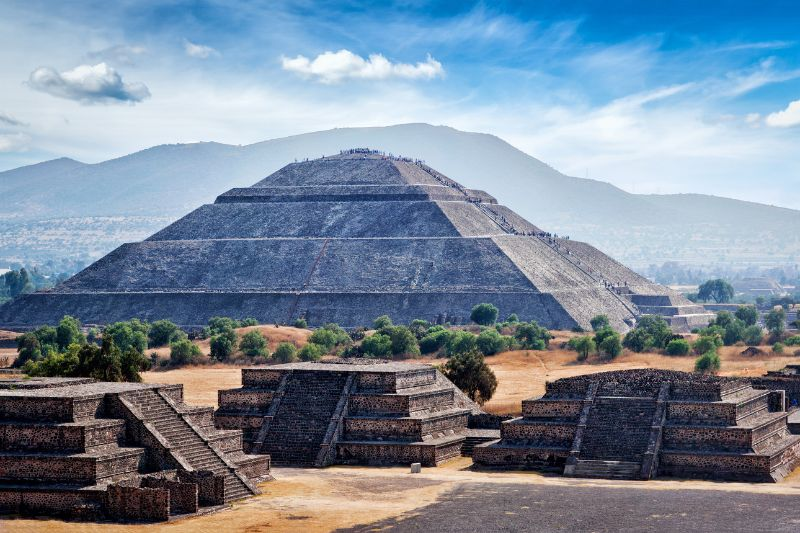
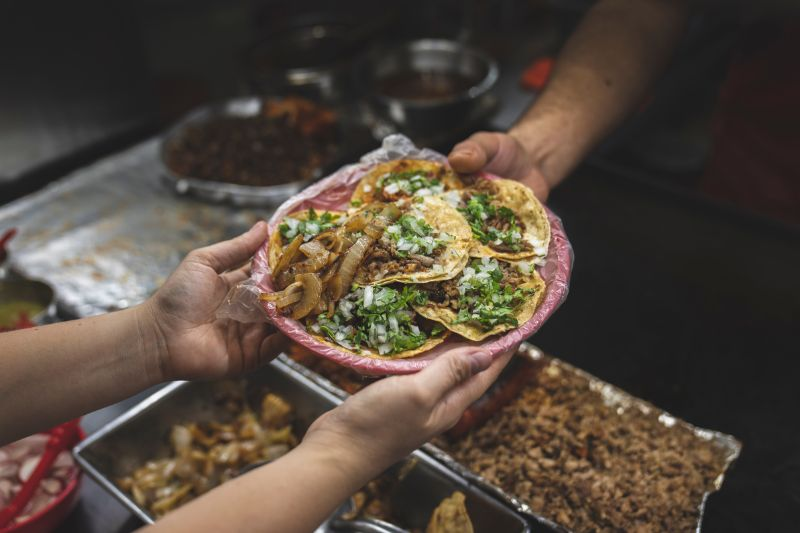
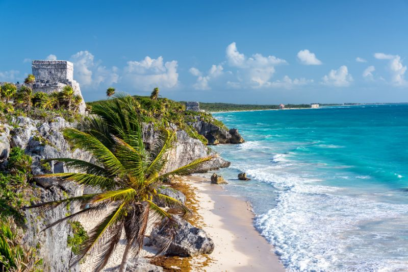

Las 3 excursiones en México que tienes que hacer
México es un país inmenso, en todo el sentido de la palabra. Es uno de nuestros destinos favoritos, y no es para menos. Está lleno de maravillas y sorpresas que te dejarán sin aliento y hoy queremos presentarte 3 excursiones en México que tienes que hacer.
Una selección que explora las mil caras de este país. Porque sus paisajes y su riqueza natural son espectaculares. Porque es tierra de cultura y tradición. Y porque tiene una riqueza gastronómica única y deliciosa.
Razones más que suficientes para descubrir todo lo que México tiene que ofrecernos.
Prepara tus maletas, porque te espera un viaje inolvidable lleno de aventuras, cultura y gastronomía exquisita.
Teotihuacán
Templo en Teotihuacan
No puedes visitar Ciudad de México sin conocer Teotihuacán, una de las antiguas ciudades más impresionantes de México. Una de las excursiones en México que tienes que hacer, y una de las mejores ruinas mayas que no te puedes perder.
Este sitio arqueológico es conocido por sus enormes pirámides, templos y palacios, y es considerado una de las ciudades prehispánicas más importantes de América.
La visita a Teotihuacán es una experiencia única que te transportará a la época prehispánica y te permitirá conocer la historia y la cultura de México de una manera muy especial.
Algunos de los lugares más importantes que no te puedes perder durante tu visita son la Pirámide del Sol, la Pirámide de la Luna, el Templo de la Serpiente Emplumada, el Templo de la Agricultura y la Calzada de los Muertos.
Ruta gastronómica en Ciudad de México
Tacos en la Ciudad de Mexico
Si eres un amante de la comida, Ciudad de México es el lugar perfecto para ti. Hacer una ruta gastronómica por sus barrios es una forma divertida y deliciosa de conocer la cultura y la historia culinaria de la ciudad.
Si eres fan de los desayunos, no te puedes perder hacer un brunch en Polanco, uno de los barrios más concurridos de Ciudad de México. Aparte de ser un barrio plagado de galerías de arte y tiendas muy chic, los múltiples restaurantes y hoteles que lo rodean, ofrecen desayunos espectaculares.
Encontrarás menús con mezclas extraordinarias de comida de todo el mundo y platos tradicionales mexicanos, como los chilaquiles.
Si, por el contrario, eres más de street food, las opciones no te van a faltar.
Riviera Maya
Una playa espectacular en la costa caribeña de México
Visitar la Riviera Maya puede ser una de las excursiones en México que tienes que hacer si tienes un espíritu aventurero.
Es un destino de playa espectacular en la costa caribeña de México. Además de sus hermosas playas de arena blanca y aguas cristalinas, en la Riviera Maya tendrás la oportunidad de hacer multitud de actividades.
Si estás buscando aventura, no te pierdas la oportunidad de visitar la Reserva de la Biosfera de Sian Ka’an, donde podrás observar la fauna y flora local, y nadar en un río subterráneo rodeado de estalactitas y estalagmitas.
Por supuesto, visitar las ruinas mayas de Tulum, situadas en un acantilado con vista al mar Caribe. Una de las visitas obligatorias en cualquier ruta maya que se precie.